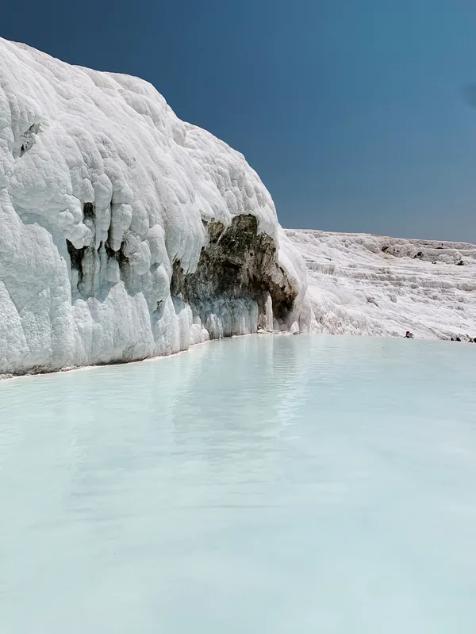
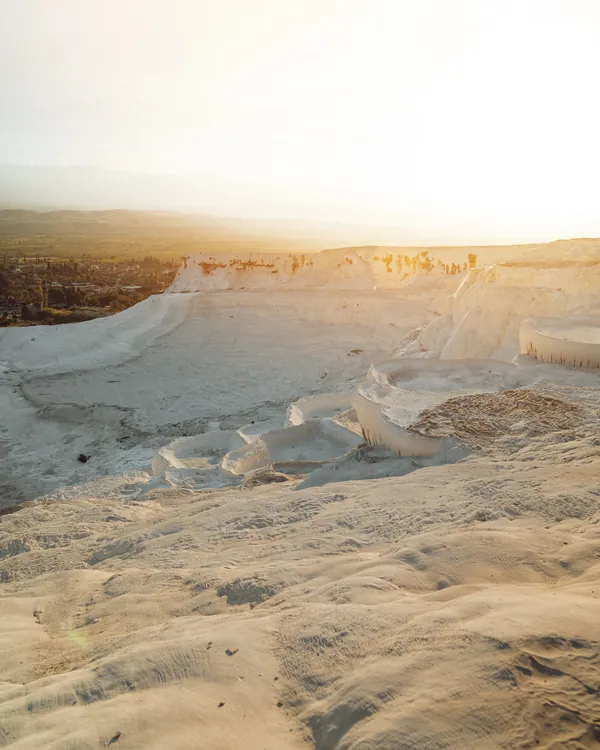
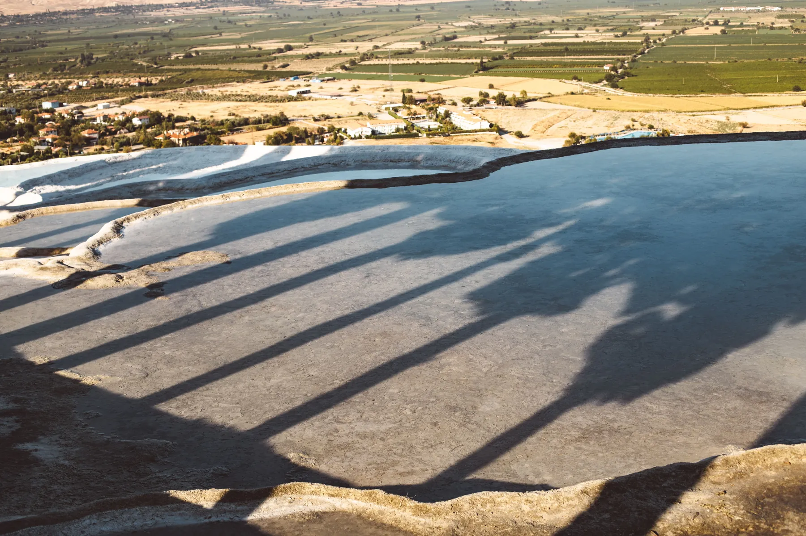

Pamukkale'de,bir evsıcaklığı.
Tarihlerinizi seçin; rezervasyon talebiniz kendi dilinizde WhatsApp'a hazır olsun.
Beyaz teraslar, akşam ışığı.
Alida Hotel · PamukkaleBeyaz teraslar, taş sütunlar, akşamın sıcak ışığı. Aile işletmesi bir otelin açık kapısından Pamukkale'ye bakın.

 Fotoğraflar temsilîdir; yayında otelin kendi kareleri yer alır.
Fotoğraflar temsilîdir; yayında otelin kendi kareleri yer alır.
Bir ailenin kapısı açık.
Alida Hotel, Pamukkale'de aile işletmesi olarak biliniyor. Bu bölüm sizin hikâyeniz için ayrıldı: otel nasıl başladı, misafirlerinize ne anlatmak istersiniz? Buradaki cümleler örnektir; yayında sizin sözlerinizle doldururuz.
Beyaz teraslar, antik taşlar.
Pamukkale travertenleri ve Hierapolis antik kenti birlikte UNESCO Dünya Mirası Listesi'nde. Çevrede Kleopatra (Antik) Havuzu, Karahayıt'ın kırmızı suyu, Laodikeia ve sıcak hava balonu turları da var.



Pamukkale'de 1, 2 ya da 3 gün.
Gün sayısını ve ilginizi seçin; öneri rota ve konaklama notu yazılsın. Genel bilgidir; saat ve giriş koşullarını gitmeden teyit edin.
 Fotoğraf temsilîdir
Fotoğraf temsilîdir
Gölgeler uzarken, teraslarda son ışık.
Seçin, talebiniz yazılsın.
Fiyat ve oda tipi bu önizlemede yok: talebinizi iletirsiniz, müsaitlik ve seçenekler size yazılı dönülür. Sağdaki mesaj seçtiğiniz dilde hazır gelir.